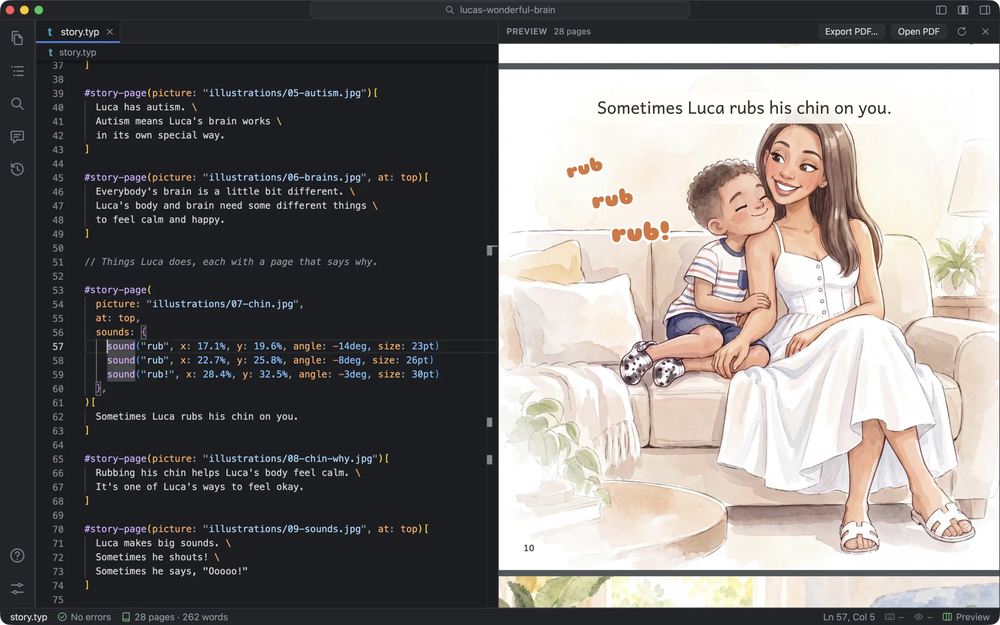
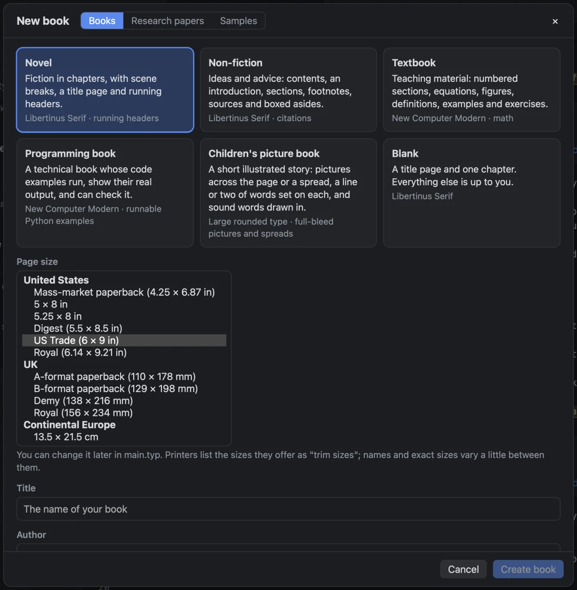

Books
- Novel
- Fiction in chapters, with scene breaks, a title page and running headers.
- Non-fiction
- Ideas and advice: contents, an introduction, sections, footnotes, sources and boxed asides.
- Textbook
- Teaching material: numbered sections, equations, figures, definitions, examples and exercises.
- Programming book
- A technical book whose code examples run, show their real output, and can check it.
- Picture book
- A short illustrated story: pictures across the page or a spread, a line or two of words on each, and sound words drawn in.
- Blank
- A title page and one chapter. Everything else is up to you.
Every template is a plain Typst project: main.typ, a style.typ with the design, and chapters, with comments saying what each part does. Nothing in it needs Foreword; typst compile builds it, and there’s a Makefile. Margins scale with the page, so a small paperback isn’t left with a sliver of text in the middle.
Page sizes
Printers list the sizes they bind as “trim sizes”, and the common ones differ by country. New Book groups them by where you’ll print. All 134 combinations of template and size are typeset in Foreword’s tests, with no errors or warnings.
- United States
- Mass-market 4.25 × 6.87, 5 × 8, 5.25 × 8, Digest 5.5 × 8.5, Trade 6 × 9, Royal 6.14 × 9.21, Executive 7 × 10, 7.5 × 9.25, 8 × 10, Letter
- Picture books
- 8 × 8 and 8.5 × 8.5 square, 10 × 8 and 11 × 8.5 landscape, 8 × 10 portrait
- United Kingdom
- A-format, B-format, Demy, Royal, Crown quarto, 210 mm square
- Europe and ISO
- 13.5 × 21.5 cm, 17 × 24 cm, A6, A5, B5, A4
- Japan
- Bunko 文庫, Shinsho 新書, Shiroku-ban 四六判, B6, Kiku-ban 菊判, B5
- China and Korea
- 32开, 大32开, 16开, 大16开; 4·6판, 국판, 신국판, 크라운판, 4·6배판
Each template offers the sizes that suit it, and any other size by hand.

Papers
IEEE, ACM, NeurIPS, CVPR, AAAI, ACL, Springer LNCS, arXiv, AMS and APA 7, each from its package on Typst Universe, downloaded when you create the paper. A note says which free fonts it wants, with the command to install them, and the message box is filled in (not sent) with a request to the assistant to set the title and authors.
Picture books
A picture book is pages of pictures with a few words on each. The template gives you that as a few commands:
#story-page(
picture: "illustrations/07-chin.jpg",
at: top,
sounds: {
sound("rub", x: 17.1%, y: 19.6%, angle: -14deg, size: 23pt)
sound("rub", x: 22.7%, y: 25.8%, angle: -8deg, size: 26pt)
sound("rub!", x: 28.4%, y: 32.5%, angle: -3deg, size: 30pt)
},
)[
Sometimes Luca rubs his chin on you.
]Words stay clear of the edges and the binding. Pictures reach into the bleed for printing. A spread across two pages has to start on a left-hand page; if one wouldn’t, the book stops with a message telling you to add or remove a page before it, rather than printing it split across a sheet.
Six samples
Each is a finished book of a different kind, so you can try the assistant, the preview and the exports on something real. Open Sample makes your own copy in Documents/Foreword Samples.
- Jekyll and Hyde
- A novel: ten chapters, a dedication, letters set apart. 90 pages, 5 × 8 in.
- The Elements of Style
- Non-fiction: rules with wrong-and-right tables. 57 pages.
- Calculus Made Easy
- A textbook: maths, redrawn figures, exercises and answers. 34 pages.
- Counting Words
- A programming book with 33 Python examples that run. 26 pages.
- Luca’s Wonderful Brain
- A picture book: watercolours, spreads and sound words. 28 pages, 8.5 in square.
- Attention Is All You Need
- The paper, restated in its own words, in the NeurIPS format, with its figures drawn in Typst. 11 pages.
Adding a chapter
File ▸ New Chapter… (⌥⌘N) asks for a title. It names the file the way your chapters are already named (ch26_tensors.typ beside ch25_…, or 11-the-island.typ), copies the chapters’ imports, and adds its include after the last chapter, written the way the others are written, before any back matter.
What it doesn’t do
- Paper templates need the internet the first time, to download their package.
- Sizes outside the US and UK are the commonly quoted ones; check your printer’s exact figure.